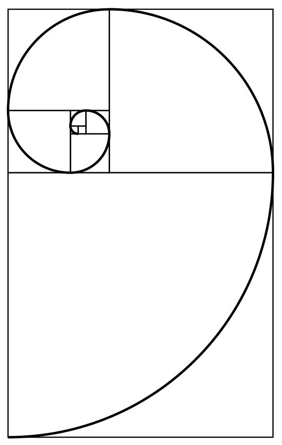

create the fibonacci sequence
Background Information
The Fibonacci sequence appears in Indian mathematics in connection with Sanskrit prosody, as
pointed out by Parmanand Singh in 1986. In the Sanskrit poetic tradition, there was interest in
enumerating all patterns of long (L) syllables of 2 units duration, juxtaposed with short (S)
syllables of 1 unit duration. Counting the different patterns of successive L and S with a given
total duration results in the Fibonacci numbers.
The sequence is named after Italian mathematician Leonardo of Pisa, later known as Fibonacci. In
his 1202 book Liber Abaci, Fibonacci introduced the sequence to Western European mathematics,
although the sequence had been described earlier in Indian mathematics, as early as 200 BC in
works by Pingala.
Fibonacci numbers appear unexpectedly often in mathematics, so much so that there is an entire
journal dedicated to their study, the Fibonacci Quarterly. Applications of Fibonacci numbers
include computer algorithms such as the Fibonacci search technique and the Fibonacci heap data
structure, and graphs called Fibonacci cubes used for interconnecting parallel and distributed
systems.

Basic Principles
F0 = 0
F1 = F2 = 1
.
.
.
Fn = Fn-1 + Fn-2
Let's Generate the Fibonacci Sequence: (Please input an integer between 1 and 196417)